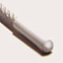

creative stuff
Herein dwells examples of the works of you talented
noise
and THE
PROGRAM
bods, with links to artist profiles and more info about the artists themselves. Onya punters.
Displaying page 1 of 2, containing 1-15 of 22 found items.
Pic //
Name //
In Brief //
tuck&fold
This knee length skirt features tucks and folds of black fabric which reveal a grey lining.
bunch corsage
This top features a corsage of ruffled black and grey fabric.
portrait of a nude
This top is constructed from nude netting.
killboytrout #82: red, red revolution:
its just a t-shirt design isn't it?
killboytrout #9t5: graphic design is dead:
a pretty esoteric t-shirt designed graphic work.
The Glamourpuss Collection (Garment 2)
This piece was kept simple and chic...

tight rope walker
Industrial by nature- cable and pulley will carry you anywhere on your body!
Connexion armband
Industrial jewels - Armband
Suits
I have been looking at the transformation of something old to something new.
Devore Dress
I have created this dress using a technique called devore...
Sad Rabbit: 3
Arising from several influences, Sad Rabbit produces t-shirts...
lilac bustier
Crushed lilac fabric folded to form a sculptural bustier with random loose threads.
The Glamourpuss Collection (Garment 1)
This garment was made from a silk-like polyester.
The Glamourpuss Collection (Garment 4 - Front)
This garment is designed to slink over the feminine body for a sexy, elegant air.
Corked
Who needs the computer age?...palm pilots, mobiles, laptops...
1
2
Next
status //
Guest. You may
Register
or
Log In
.
Australian Central Standard Time (GMT +09:30) //
10:56 PM, Sat, 5 Mar, 2005.